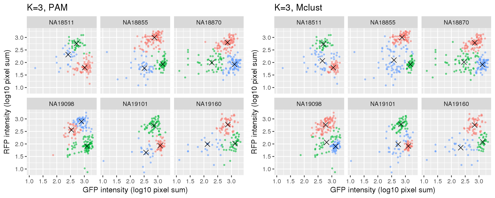
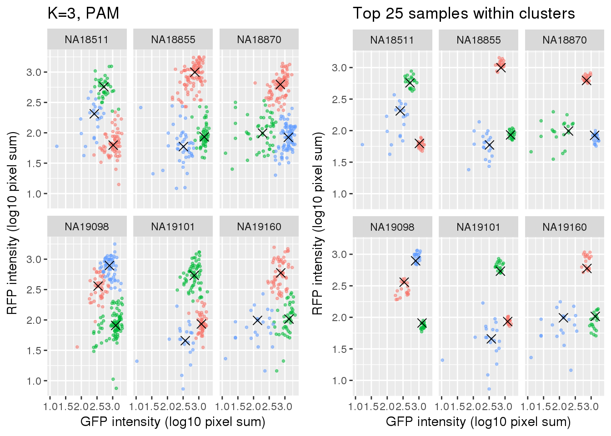

Last updated: 2018-01-31
Code version: 8ea93f0
I fit PAM and norma-based mixture models on the data that have already been filtered for quality single cells using both RNA-sequencing and microscopy data. The goal here is to identify a subset of cells that are less noisy and use these cells to estimate cell cycle phase.
\(~\)
Results:
Compare PAM vs. Mclust results: seems that PAM places cluster centers at the most densely distributed region. and on the other hand, Mclust places cluster centers at the region that is the “center” of the points assigned to the clusters.
Select subset of cells: using PAM results, I compute silhouette index for all samples and the choose the top 25 samples in each cluster for each individual. These samples are used in some analysis to evaluate model fit on less noisy data, such as the analysis applying cellcycleR to both imaging data and sequencing data (here).
Let \(s(i)\) denotes the silhouette index of sample \(i\). \(s(i)\) ranges between -1 to 1. A large value of \(s(i)\) indicates that sample \(i\) is more similar to samples belonged to its own cluster than any other clusters, and a small value of \(s(i)\) indicates that sample \(i\) is dissimilar to samples belonged to its own clusters and matches better to samples belonged in some other clusters.
\(a(i)\): Average distance of \(i\) with all other samples within the same cluster.
\(b(i)\): Lowest average distance of \(i\) to all samples in any other cluster, of which \(i\) is not a member. In other words, the average distance of sample \(i\) to all samples in the neighboring cluster.
\[ s(i) = \frac{b(i)-a(i)}{max\{ a(i), b(i)\}} \]
Packages
library(Biobase)
library(ggplot2)
library(cowplot)
library(cluster)
library(mclust)
library(data.table)
library(tidyr)Load data
df <- readRDS(file="../data/eset-filtered.rds")
pdata <- pData(df)
fdata <- fData(df)
# select endogeneous genes
counts <- exprs(df)[grep("ERCC", rownames(df), invert=TRUE), ]Fitting PAM for cells using only green and red intensity measurements.
ints <- with(pdata, data.frame(rfp.median.log10sum,
gfp.median.log10sum))
ints <- data.frame(ints,
chip_id = as.factor(pdata$chip_id))
k=3
pam_fit <- lapply(1:uniqueN(ints$chip_id), function(i) {
df_sub <- subset(ints, chip_id==unique(chip_id)[i],
select = -c(chip_id))
fit_sub <- pam(df_sub, k=k, diss=F)
return(fit_sub)
})
names(pam_fit) <- unique(ints$chip_id)
mclust_fit <- lapply(1:uniqueN(ints$chip_id), function(i) {
df_sub <- subset(ints, chip_id==unique(chip_id)[i],
select = -c(chip_id))
fit_sub <- Mclust(df_sub, G=k)
return(fit_sub)
})
names(mclust_fit) <- unique(ints$chip_id)
# get centers of each cluster
pam_centers <- do.call(rbind, lapply(1:uniqueN(ints$chip_id), function(i) {
fit <- pam_fit[[i]]
ints_sub <- ints[ints$chip_id == unique(ints$chip_id)[i],]
tmp <- fit$id.med
tmp <- data.frame(ints_sub[fit$id.med,],
center=c(1:3))
return(tmp) }) )
mclust_centers <- do.call(rbind, lapply(1:uniqueN(ints$chip_id), function(i) {
fit <- mclust_fit[[i]]
tmp <- fit$parameters$mean
tmp <- t(tmp)
tmp <- data.frame(tmp,center=c(1:3),
chip_id=names(mclust_fit)[i])
return(tmp) }) )
# make data read for ggplot
pam_fit_plot <- do.call(rbind, lapply(1:uniqueN(ints$chip_id), function(i) {
df_sub <- subset(ints, chip_id==unique(chip_id)[i])
df_sub <- data.frame(df_sub, cluster=as.factor(pam_fit[[i]]$clustering))
return(df_sub)
}))
mclust_fit_plot <- do.call(rbind, lapply(1:uniqueN(ints$chip_id), function(i) {
df_sub <- subset(ints, chip_id==unique(chip_id)[i])
df_sub <- data.frame(df_sub, cluster=as.factor(mclust_fit[[i]]$classification))
return(df_sub)
}))Compare PAM vs. Mclust results
k=3

Combine silhouette data with the intensity data.
si_pam <- vector("list", length(pam_fit))
for (i in 1:length(si_pam)) {
si_tmp <- silhouette(pam_fit[[i]])
si_out <- lapply(1:3, function(cl) {
ord <- order(si_tmp[si_tmp[,1]==cl, 3], decreasing=TRUE)
ii <- as.numeric(rownames(si_tmp)[si_tmp[,1]==cl])
ii <- ii[ord]
df_sub <- data.frame(ints[ii,],
unique_id = rownames(pdata)[ii],
cluster=cl,
si=si_tmp[si_tmp[,1]==cl, 3])
})
si_out <- do.call(rbind, si_out)
si_pam[[i]] <- si_out
}
si_pam_long <- do.call(rbind, si_pam)Choose the top 25 in each cluster.
cutoff_nsamples <- 20
foo <- lapply(1:uniqueN(si_pam_long$chip_id), function(i) {
foo2 <- lapply(1:uniqueN(si_pam_long$cluster), function(j) {
df_tmp <- subset(si_pam_long, chip_id == unique(si_pam_long$chip_id)[i] & cluster == unique(si_pam_long$cluster)[j])
if (cutoff_nsamples > dim(df_tmp)[1]) {
df_tmp_sub <- df_tmp
} else {
df_tmp_sub <- df_tmp[which(order(df_tmp$si, decreasing = T) %in% c(1:cutoff_nsamples)),]
}
return(df_tmp_sub)
})
foo2 <- do.call(rbind, foo2)
return(foo2)
})
foo <- do.call(rbind, foo)
si_pam_25 <- fooCompare full set versus subset of cells.
hard code cluster labels. default in ggplot is 1 orange, 2 green, 3 blue
# NA18511
# orange 1 to 3, green 2 to 2, blue 3 to 1,
# NA18855
# orange 1 to 2, green 2 to 3, blue 3 to 1,
# NA18870
# orange 1 to 2, green 2 to 1, blue 3 to 3
# NA19098
# orange 1 to 1, green 2 to 3, blue 3 to 2
# NA19101
# orange 1 to 3, green 2 to 2, blue 3 to 1
# NA19160
# orange 1 to 2, green 2 to 3, blue 3 to 1
tmp <- si_pam_long
tmp[si_pam_long$chip_id == "NA18511" & si_pam_long$cluster==1,]$cluster <- 3
tmp[si_pam_long$chip_id == "NA18511" & si_pam_long$cluster==2,]$cluster <- 2
tmp[si_pam_long$chip_id == "NA18511" & si_pam_long$cluster==3,]$cluster <- 1
tmp[si_pam_long$chip_id == "NA18855" & si_pam_long$cluster==1,]$cluster <- 2
tmp[si_pam_long$chip_id == "NA18855" & si_pam_long$cluster==2,]$cluster <- 3
tmp[si_pam_long$chip_id == "NA18855" & si_pam_long$cluster==3,]$cluster <- 1
tmp[si_pam_long$chip_id == "NA18870" & si_pam_long$cluster==1,]$cluster <- 2
tmp[si_pam_long$chip_id == "NA18870" & si_pam_long$cluster==2,]$cluster <- 1
tmp[si_pam_long$chip_id == "NA18870" & si_pam_long$cluster==3,]$cluster <- 3
tmp[si_pam_long$chip_id == "NA19098" & si_pam_long$cluster==1,]$cluster <- 1
tmp[si_pam_long$chip_id == "NA19098" & si_pam_long$cluster==2,]$cluster <- 3
tmp[si_pam_long$chip_id == "NA19098" & si_pam_long$cluster==3,]$cluster <- 2
tmp[si_pam_long$chip_id == "NA19101" & si_pam_long$cluster==1,]$cluster <- 3
tmp[si_pam_long$chip_id == "NA19101" & si_pam_long$cluster==2,]$cluster <- 2
tmp[si_pam_long$chip_id == "NA19101" & si_pam_long$cluster==3,]$cluster <- 1
tmp[si_pam_long$chip_id == "NA19160" & si_pam_long$cluster==1,]$cluster <- 2
tmp[si_pam_long$chip_id == "NA19160" & si_pam_long$cluster==2,]$cluster <- 3
tmp[si_pam_long$chip_id == "NA19160" & si_pam_long$cluster==3,]$cluster <- 1
plot_grid(
ggplot(data=si_pam_long) +
geom_point(aes(x=gfp.median.log10sum,
y=rfp.median.log10sum, col=as.factor(cluster)),
alpha = .5, cex = .7) +
geom_point(data=pam_centers,
aes(x=gfp.median.log10sum,
y=rfp.median.log10sum), shape=4, size=3) +
labs(title = "K=3, PAM",
x="GFP intensity (log10 pixel sum)",
y = "RFP intensity (log10 pixel sum)") +
facet_wrap(~as.factor(chip_id), ncol=3) +
theme_gray() + theme(legend.position="none"),
ggplot(data=si_pam_25) +
geom_point(aes(x=gfp.median.log10sum,
y=rfp.median.log10sum, col=as.factor(cluster)),
alpha = .5, cex = .7) +
geom_point(data=pam_centers,
aes(x=gfp.median.log10sum,
y=rfp.median.log10sum), shape=4, size=3) +
labs(title = "Top 25 samples within clusters",
x="GFP intensity (log10 pixel sum)",
y = "RFP intensity (log10 pixel sum)") +
facet_wrap(~as.factor(chip_id), ncol=3) +
theme_gray() + theme(legend.position="none")
)
save subset of cells to rds.
save(si_pam_long, si_pam_25,
file = "../output/images-subset-silhouette.Rmd/si_pam.rda")R version 3.4.1 (2017-06-30)
Platform: x86_64-pc-linux-gnu (64-bit)
Running under: Scientific Linux 7.4 (Nitrogen)
Matrix products: default
BLAS: /home/joycehsiao/miniconda3/envs/fucci-seq/lib/R/lib/libRblas.so
LAPACK: /home/joycehsiao/miniconda3/envs/fucci-seq/lib/R/lib/libRlapack.so
locale:
[1] LC_CTYPE=en_US.UTF-8 LC_NUMERIC=C
[3] LC_TIME=en_US.UTF-8 LC_COLLATE=en_US.UTF-8
[5] LC_MONETARY=en_US.UTF-8 LC_MESSAGES=en_US.UTF-8
[7] LC_PAPER=en_US.UTF-8 LC_NAME=C
[9] LC_ADDRESS=C LC_TELEPHONE=C
[11] LC_MEASUREMENT=en_US.UTF-8 LC_IDENTIFICATION=C
attached base packages:
[1] parallel stats graphics grDevices utils datasets methods
[8] base
other attached packages:
[1] tidyr_0.7.1 data.table_1.10.4 mclust_5.3
[4] cluster_2.0.6 cowplot_0.9.1 ggplot2_2.2.1
[7] Biobase_2.38.0 BiocGenerics_0.24.0
loaded via a namespace (and not attached):
[1] Rcpp_0.12.14 knitr_1.17 magrittr_1.5 munsell_0.4.3
[5] colorspace_1.3-2 rlang_0.1.4.9000 stringr_1.2.0 plyr_1.8.4
[9] tools_3.4.1 grid_3.4.1 gtable_0.2.0 git2r_0.19.0
[13] htmltools_0.3.6 yaml_2.1.16 lazyeval_0.2.0 rprojroot_1.2
[17] digest_0.6.12 tibble_1.3.3 purrr_0.2.2 glue_1.1.1
[21] evaluate_0.10.1 rmarkdown_1.8 labeling_0.3 stringi_1.1.2
[25] compiler_3.4.1 scales_0.4.1 backports_1.0.5 This R Markdown site was created with workflowr